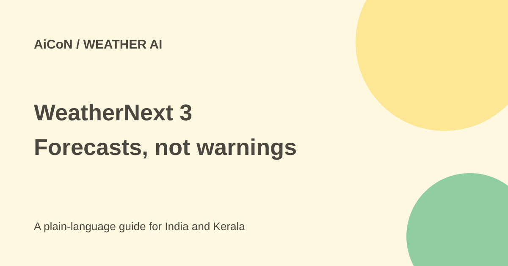

WeatherNext 3: hourly AI forecasts, with safety limits
WeatherNext 3 is Google's weather forecasting model. It uses live satellite observations and updates forecasts hourly. It powers weather features inside Google products, but it does not replace official IMD warnings.

What is new?
Google announced WeatherNext 3 on 3 September 2026. It takes live geostationary satellite observations as input and also learns from weather-station measurements. The developer page says it starts a new forecast every hour.
Not every variable has the same detail. Google describes temperature and moisture at about 5 km, other surface variables at 10 km, and atmospheric variables such as wind at 25 km. A 5 km grid is not a forecast for your exact street.
The developer guide lists a 15-day horizon for the main six-hourly forecast cycles and a 48-hour horizon for interim hourly runs. Hourly updates therefore do not make every forecast run a 15-day forecast.
Where can you use it?
Google says it is being integrated into Search, Gemini, Maps, the Maps Platform Weather API and Cloud tools. It is not a separate WeatherNext phone app. Researchers can access forecast data through BigQuery, Earth Engine or Cloud Storage.
For a Kerala reader, a forecast can help plan a journey or outdoor work. A hill road, coastal area and nearby town can still have different conditions. The company's claims of improved accuracy are not a promise about every rain shower in your district.
How to check a forecast
- Open a Google weather feature and enter the exact town or destination.
- Check the time, date and forecast period. Hourly model updates do not mean every screen refreshes hourly.
- Look at rain probability, expected temperature and wind together, rather than only a weather icon.
- For a trip, check your destination and route again before leaving.
- Open the official IMD Kerala page for severe-weather warnings. Follow official local safety instructions.
- Developers should read the data-access guide and service pricing before using large data queries or downloads.
Free or paid?
The announcement does not give WeatherNext 3 a standalone consumer subscription price. It is a model within other products. Developer access may involve Google Cloud, API, query or storage costs; do not assume forecast data access makes the full computing workflow free.
Safety comes first
Google's announcement explicitly directs official forecasts, severe-weather warnings and public safety advice to national or local meteorological agencies. In Kerala, use IMD's official pages and local authorities for warnings. Do not use an AI answer alone to decide whether to cross flooded water or travel through a dangerous area.
What changed since the original post?
The original 5 km claim is narrowed to the variables Google actually lists. We added the official safety disclaimer and separated ordinary weather viewing from developer data access. No local forecast-accuracy test was carried out.
Frequently asked questions
Is there a WeatherNext app?
Google describes integration into its existing products and developer services, not a standalone app.
Does hourly mean always correct?
No. A frequent forecast can still be wrong.
Should I follow it instead of an IMD warning?
No. Use official meteorological warnings and local safety advice.
Sources: Google announcement · Developer model guide · IMD Kerala. Checked 7 October 2026.